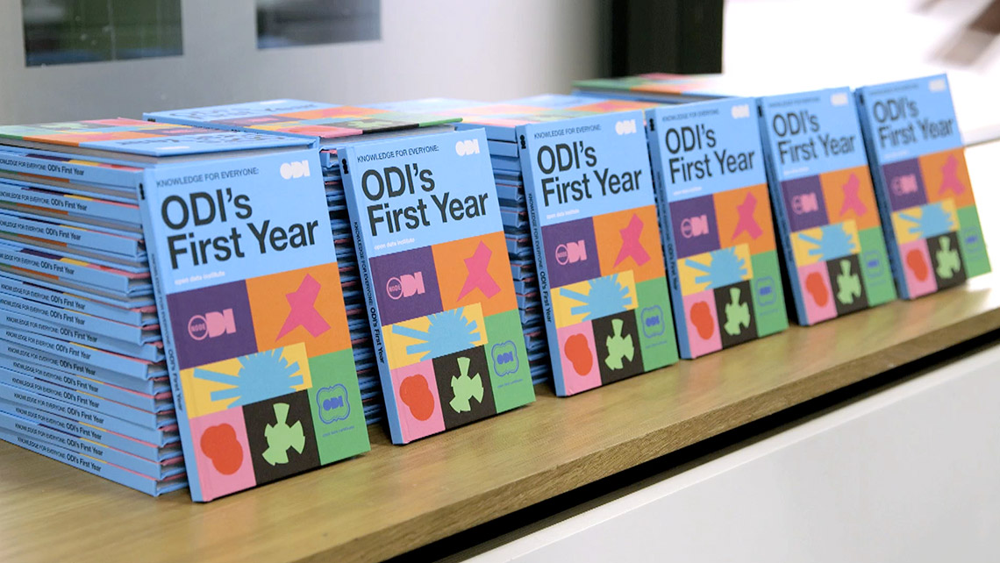

The ODI could have had no better foundations: meaningful funding, operational autonomy, world-leading founders, the perfect address book, the right place and timing. The UK’s presidency of the Open Government Partnership, the signing of the G8 Open Data Charter, and the US Presidential Executive Order coincided to push a single message: data is open and machine-readable by default.
Transparency as a public good is an excellent foundation. We have demonstrated potential for improved public-sector efficiency and economic growth. Over 40 companies have joined as members, initiating projects and opening up their own data.
We built an exceptional team, who have welcomed over 3,000 people from 30 countries to our Shoreditch offices. Over 130 people from 11 countries took our courses. We reached over 100,000 people online. At the G8 we launched Open Data Certificates. Our peer-to-peer lending research hit the front page of the Financial Times.
We helped a dozen startups generate £1.4m income, and unlocked substantial funding for open innovation: a £750k innovation programme, a £1.2m challenge series, £400k for research, £470k philanthropic investment, and £2.4m for international development.
We have been open in everything we have done: from our first lines of code for tools, to codifying the ODI itself. Our development has all been collaborative and, working with dozens of countries, we have designed a model to catalyse open data culture internationally.
Gavin Starks, CEO

Image: Lightweight Media